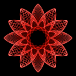

Parkinsons trial
Place the index, middle, ring, little fingers of your right hand on keyboard keys g-h-j-k. Warm up by pressing the keys up and down in any order, but not simultaneously. Pay attention to the little finger, it should also comfortably press the corresponding key (k). Make sure you hear the tone of each key, at a comfortable sound level. Adjust the volume if you don’t hear the tones.
Now you are going to practice sequence 1, represented by this image:
Sequence 1 consists of four key presses, in this order:
g – j – h – k
(that is, index – ring – middle – little finger)
Press enter to continue
Sequence 1 consists of four key presses, in this order:
g – j – h – k
(that is, index – ring – middle – little finger)
Try it out at a comfortable speed, you can practice it slowly now, to make sure the order is clear.
Take a little break of 1-2 seconds between each performance of the sequence. You can practice it up to 10 times.
Press F1 to have the computer remind you of the sequenceWas it enough practice? Can you remember the sequence?
Press enter to continue
Try it out! Play it once at a time and wait for the computer to tell you whether it is correct.
Hint: It starts with the right index pressing keyboard letter g.
Now you are going to practice sequence 2, represented by this image:
Press enter to continue

Sequence 2 consists of four key presses, in this order:
k – g – j – h
(that is, little - index – ring – middle finger)
Press enter to continue
Sequence 2 consists of four key presses, in this order:
k – g – j – h
(that is, little - index – ring – middle finger)
Try it out at a comfortable speed, you can practice it slowly now, to make sure the order is clear.
Take a little break of 1-2 seconds between each performance of the sequence. You can practice it up to 10 times.
Press F1 to have the computer remind you of the sequence
Was it enough practice? Can you remember the sequence?
Press enter to continue
Try it out! Play it once at a time and wait for the computer to tell you whether it is correct.
Hint: It starts with the right index pressing keyboard letter g.
Now you will see the images representing sequence 1 and sequence 2 on the screen. Each time you see both, you have to decide whether you play sequence 1 or sequence 2.
Then you will simply play the sequence you choose on that attempt. Once you play the sequence, you will see whether you obtain reward (5 points) or not. Your aim is to obtain as many points as possible at the end of this study, so play the sequence you think will more likely give you reward! Careful though: The reward (points) associated with each sequence will change from time to time. So pay attention and adapt your decisions if you think that the conditions changed.
Press 1 (or click the purple icon) to choose sequence 1.
Press 2 (or click the yellow icon) to choose sequence 2.
Play sequence.